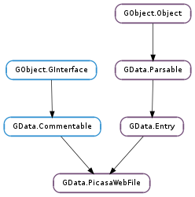

| static | new(id) |
| get_album_id() | |
| get_caption() | |
| get_checksum() | |
| get_comment_count() | |
| get_contents() | |
| get_coordinates() | |
| get_credit() | |
| get_distance() | |
| get_edited() | |
| get_exposure() | |
| get_flash() | |
| get_focal_length() | |
| get_fstop() | |
| get_height() | |
| get_id() | |
| get_image_unique_id() | |
| get_iso() | |
| get_make() | |
| get_model() | |
| get_rotation() | |
| get_size() | |
| get_tags() | |
| get_thumbnails() | |
| get_timestamp() | |
| get_version() | |
| get_video_status() | |
| get_width() | |
| is_commenting_enabled() | |
| set_album_id(album_id) | |
| set_caption(caption) | |
| set_checksum(checksum) | |
| set_coordinates(latitude, longitude) | |
| set_is_commenting_enabled(is_commenting_enabled) | |
| set_rotation(rotation) | |
| set_tags(tags) | |
| set_timestamp(timestamp) |
| Name | Type | Flags | Description |
|---|---|---|---|
| album-id | str | r/w | The ID for the file’s album. |
| caption | str | r/w | The file’s descriptive caption. |
| checksum | str | r/w | A checksum of the file, useful for duplicate detection. |
| comment-count | int | r | The number of comments on the file. |
| credit | str | r | The nickname of the user credited with this file. |
| distance | float | r | The distance to the subject. |
| edited | int | r | The time this file was last edited. |
| exposure | float | r | The exposure time. |
| file-id | str | r/w/c | The ID of the file. |
| flash | bool | r | Indicates whether the flash was used. |
| focal-length | float | r | The focal length used in the shot. |
| fstop | float | r | The F-stop used. |
| height | int | r | The height of the photo or video, in pixels. |
| image-unique-id | str | r | An unique ID for the image. |
| is-commenting-enabled | bool | r/w | Indicates whether comments are enabled. |
| iso | r | The ISO speed. | |
| latitude | float | r/w | The location as a latitude coordinate associated with this file. |
| longitude | float | r/w | The location as a longitude coordinate associated with this file. |
| make | str | r | The name of the manufacturer. |
| model | str | r | The model of the camera. |
| rotation | int | r/w | The rotation of the photo, in degrees. |
| size | int | r | The size of the file, in bytes. |
| tags | list | r/w | A None-terminated array of tags associated with the file. |
| timestamp | int | r/w | The time the file was purportedly taken. |
| version | str | r/w/c | The version number of the file. |
| video-status | str | r | The status of the file, if it is a video. |
| width | int | r | The width of the photo or video, in pixels. |
None
| Name | Type | Access |
|---|---|---|
| parent | GData.Entry | r |
Bases: GData.Entry, GData.Commentable
All the fields in the GData.PicasaWebFile structure are private and should never be accessed directly.
| Parameters: | id (str or None) – the file’s ID, or None |
|---|---|
| Returns: | a new GData.PicasaWebFile ; unref with GObject.Object.unref () |
| Return type: | GData.PicasaWebFile |
Creates a new GData.PicasaWebFile with the given ID and default properties.
| Returns: | the ID of the album containing the GData.PicasaWebFile |
|---|---|
| Return type: | str |
Gets the GData.PicasaWebFile :album-id property. This is in the same form as returned by GData.PicasaWebAlbum.get_id ().
| Returns: | the file’s descriptive caption, or None |
|---|---|
| Return type: | str |
Gets the GData.PicasaWebFile :caption property.
| Returns: | the checksum assigned to this file, or None |
|---|---|
| Return type: | str |
Gets the GData.PicasaWebFile :checksum property.
| Returns: | the number of comments on the file |
|---|---|
| Return type: | int |
Gets the GData.PicasaWebFile :comment-count property.
| Returns: | a GLib.List of GData.MediaContent items |
|---|---|
| Return type: | [GData.MediaContent] |
Returns a list of media content, e.g. the actual photo or video.
| Return type: | latitude: float, longitude: float |
|---|
Gets the GData.PicasaWebFile :latitude and GData.PicasaWebFile :longitude properties, setting the out parameters to them. If either latitude or longitude is None, that parameter will not be set. If the coordinates are unset, latitude and longitude will be set to GObject.G_MAXDOUBLE.
| Returns: | the nickname of the user credited with this file |
|---|---|
| Return type: | str |
Gets the GData.PicasaWebFile :credit property.
| Returns: | the distance recorded in the photo’s EXIF, or -1 if unknown |
|---|---|
| Return type: | float |
Gets the GData.PicasaWebFile :distance property.
| Returns: | the UNIX timestamp for the time the file was last edited, or -1 |
|---|---|
| Return type: | int |
Gets the GData.PicasaWebFile :edited property. If the property is unset, -1 will be returned.
| Returns: | the exposure value, or 0 if unknown |
|---|---|
| Return type: | float |
Gets the GData.PicasaWebFile :exposure property.
| Returns: | True if flash was used, False otherwise |
|---|---|
| Return type: | bool |
Gets the GData.PicasaWebFile :flash property.
| Returns: | the focal-length value, or -1 if unknown |
|---|---|
| Return type: | float |
Gets the GData.PicasaWebFile :focal-length property.
| Returns: | the F-stop value, or 0 if unknown |
|---|---|
| Return type: | float |
Gets the GData.PicasaWebFile :fstop property.
| Returns: | the height of the image or video, in pixels |
|---|---|
| Return type: | int |
Gets the GData.PicasaWebFile :height property.
| Returns: | the file’s ID |
|---|---|
| Return type: | str |
Gets the GData.PicasaWebFile :file-id property.
| Returns: | the photo’s unique EXIF identifier, or None |
|---|---|
| Return type: | str |
Gets the GData.PicasaWebFile :image-unique-id property.
| Returns: | the ISO speed, or -1 if unknown |
|---|---|
| Return type: | int |
Gets the GData.PicasaWebFile :iso property.
| Returns: | the name of the manufacturer of the camera, or None if unknown |
|---|---|
| Return type: | str |
Gets the GData.PicasaWebFile :make property.
| Returns: | the model name of the camera, or None if unknown |
|---|---|
| Return type: | str |
Gets the GData.PicasaWebFile :model property.
| Returns: | the image’s rotation, in degrees |
|---|---|
| Return type: | int |
Gets the GData.PicasaWebFile :rotation property.
| Returns: | the size of the file, in bytes |
|---|---|
| Return type: | int |
Gets the GData.PicasaWebFile :size property.
| Returns: | a None-terminated array of tags associated with the file, or None |
|---|---|
| Return type: | [str] |
Gets the GData.PicasaWebFile :tags property.
| Returns: | a GLib.List of GData.MediaThumbnail s, or None |
|---|---|
| Return type: | [GData.MediaThumbnail] |
Returns a list of thumbnails, often at different sizes, for this file. Currently, PicasaWeb usually returns three thumbnails, with widths in pixels of 72, 144, and 288. However, the thumbnail will not be larger than the actual image, so thumbnails may be smaller than the widths listed above.
| Returns: | the UNIX timestamp for the timestamp property in milliseconds, or -1 |
|---|---|
| Return type: | int |
Gets the GData.PicasaWebFile :timestamp property. It’s a UNIX timestamp in milliseconds (not seconds) since the epoch. If the property is unset, -1 will be returned.
| Returns: | the file’s version number, or None |
|---|---|
| Return type: | str |
Gets the GData.PicasaWebFile :version property.
| Returns: | the status of this video (“pending”, “ready”, “final” or “failed”), or None |
|---|---|
| Return type: | str |
Gets the GData.PicasaWebFile :video-status property.
| Returns: | the width of the image or video, in pixels |
|---|---|
| Return type: | int |
Gets the GData.PicasaWebFile :width property.
| Returns: | True if commenting is enabled, False otherwise |
|---|---|
| Return type: | bool |
Gets the GData.PicasaWebFile :is-commenting-enabled property.
| Parameters: | album_id (str) – the ID of the new album for this file |
|---|
Sets the GData.PicasaWebFile :album-id property, effectively moving the file to the album.
| Parameters: | caption (str or None) – the file’s new caption, or None |
|---|
Sets the GData.PicasaWebFile :caption property to caption.
Set caption to None to unset the file’s caption.
| Parameters: | checksum (str or None) – the new checksum for this file, or None |
|---|
Sets the GData.PicasaWebFile :checksum property to checksum.
Set checksum to None to unset the property.
| Parameters: |
|
|---|
Sets the GData.PicasaWebFile :latitude and GData.PicasaWebFile :longitude properties to latitude and longitude respectively.
| Parameters: | is_commenting_enabled (bool) – True if commenting should be enabled for the file, False otherwise |
|---|
Sets the GData.PicasaWebFile :is-commenting-enabled property to is_commenting_enabled.
| Parameters: | rotation (int) – the new rotation for the image, in degrees |
|---|
Sets the GData.PicasaWebFile :rotation property to rotation.
The rotation is absolute, rather than cumulative, through successive calls to GData.PicasaWebFile.set_rotation (), so calling it with 90° then 20° will result in a final rotation of 20°.
| Parameters: | tags ([str] or None) – a new None-terminated array of tags, or None |
|---|
Sets the GData.PicasaWebFile :tags property to tags.
Set tags to None to unset the property.
| Parameters: | timestamp (int) – a UNIX timestamp, or -1 |
|---|
Sets the GData.PicasaWebFile :timestamp property from timestamp. This should be a UNIX timestamp in milliseconds (not seconds) since the epoch. If timestamp is -1, the property will be unset.